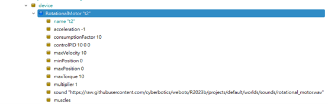
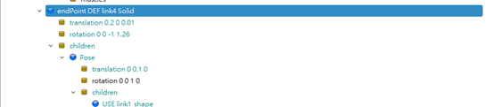

第六階段：準備工作與定義關鍵節點 (Preparation) <<
Previous Next >> 第八階段：閉合迴路 (Closing the Loop via SolidReference)
第七階段：建立右側第一節手臂 (Link 4)
這一步與左臂相似，但要注意坐標系的變換。
-
新增關節 (JOINT4)：
在 Robot 的 children 下新增 HingeJoint。
關鍵設定 - Anchor (錨點)：將 jointParameters -> anchor 設為 0.2 0 0。
注意：因為右臂的旋轉中心在右邊底座，若不設此值，它會繞著世界原點 (0,0,0) 旋轉，導致結構解體。
-
設置馬達 (T2)：
在 device 欄位加入 RotationalMotor，命名為 T2。

-
建立連桿實體 (USE 技巧)：
在 endPoint 加入 Solid。
在 children -> Shape 欄位，直接選用 USE -> LINK_SHAPE（複用左臂定義好的形狀）。

-
Pose 調整：
因為結構是對稱但有角度的，這裡需要像左臂一樣，先用 Pose 包住 Shape 或在 Solid 層級做旋轉。
影片中設定旋轉角度約為 71.86 度 (負 Z 軸方向)，並設定位移。
Z 軸分層 (避坑)：將這個 Solid 的 Z 軸稍微抬高（例如 0.05），使其高度與左臂錯開。
目的：避免左右兩臂在運動時發生「穿模」或物理碰撞干涉。
-
物理屬性：
務必加入 boundingObject (USE Shape) 和 physics (Physics node)。
第六階段：準備工作與定義關鍵節點 (Preparation) <<
Previous Next >> 第八階段：閉合迴路 (Closing the Loop via SolidReference)